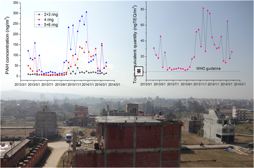

多环芳烃（PAHs）因为其致癌、致畸等性质引起越来越多关注。青藏高原研究所康世昌研究员课题组（陈鹏飞博士生为第一作者，李潮流副研究员为通讯作者）通过对尼泊尔加德满都大气总悬浮颗粒物中PAHs的分析，系统的解析了研究区颗粒态PAHs的含量组成、季节变化、来源及控制因素等。
研究结果表明，加德满都大气中颗粒态PAHs的含量较高，与东亚和南亚的一些大城市如北京、德里等相当。受排放源和天气变化影响，PAHs含量呈现非季风期高而季风期低的季节变化趋势（以4-6环变化为主）。比值法的分析结果表明研究区大气中的PAHs主要来自柴油和生物质燃料燃烧。计算得出PAHs的毒性当量远高于世界卫生组织标准（1 ng
TEQ/m3）。这一成果对于研究喜马拉雅山南部城市区域大气污染及污染物对居民健康影响具有重要意义，并可为制定相关治理政策提供参考。

这一研究成果发表在
Science of
the Total Environment
（Chen, P.F., Kang, S.C., Li, C.L.,
Rupakheti, M., Yan, F.P., Li, Q.L., Ji, Z.M., Zhang, Q.G., Luo, W., Sillanp
ää
,
M.: Characteristics and
sources of polycyclic aromatic hydrocarbons in atmospheric aerosols in the Kathmandu Valley,
Nepal,
Sci. Total. Environ. 538, 86-92, doi:
10.1016/j.scitotenv.2015.08.006
）
论文链接：http://www.sciencedirect.com/science/article/pii/S0048969715305106